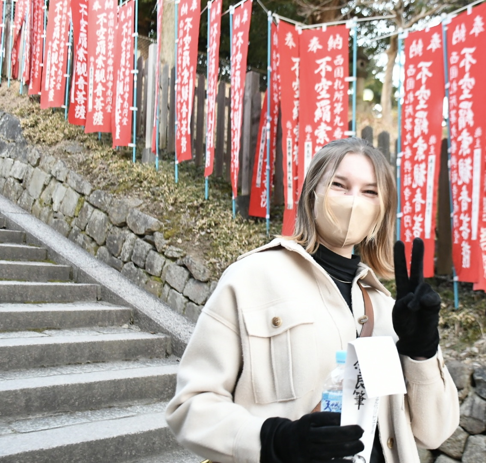
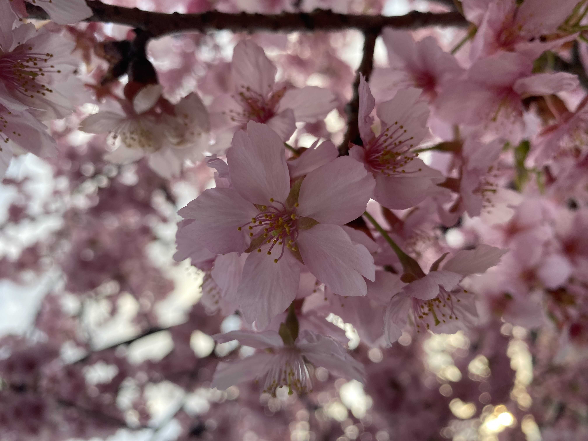
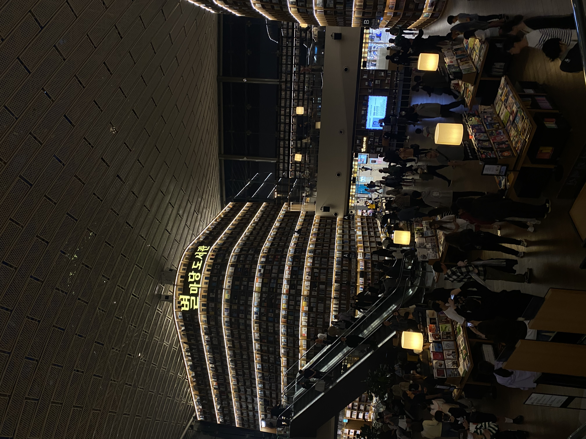
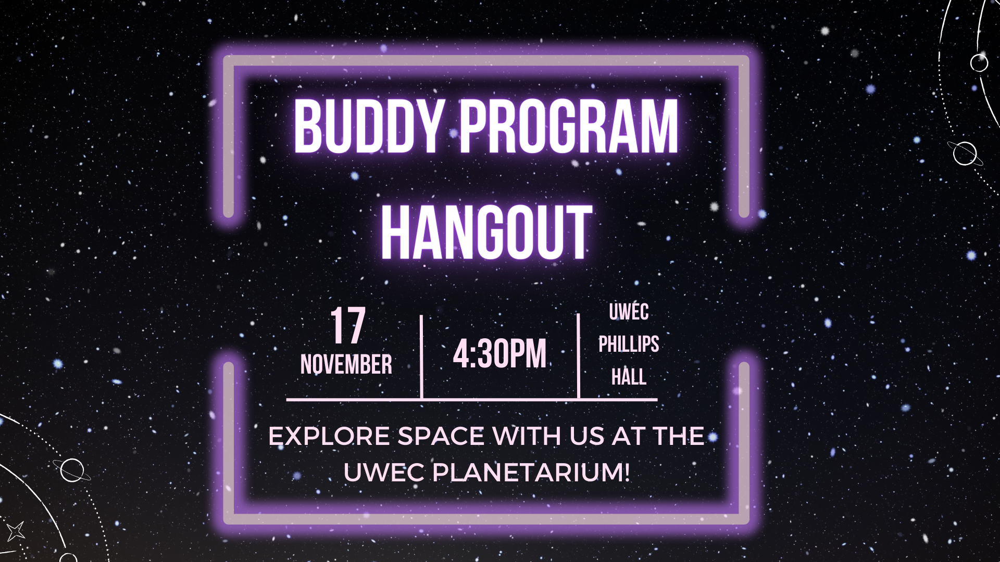
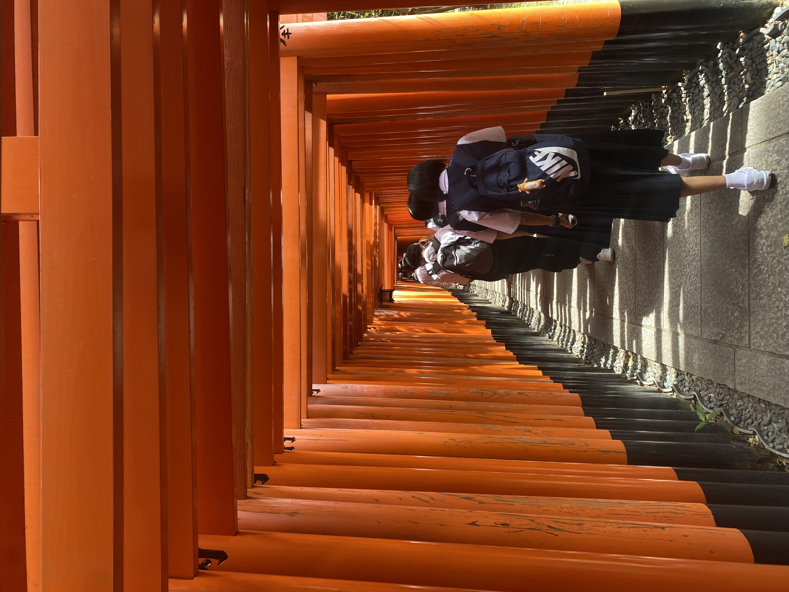

About
My name is Willa and I am currently studying Graphic Communication and international business at the University of Wisconsin - Eau Claire. I took a few different paths for majors, but I have finally settled on one that brings me joy. I am interested in illustration and digital design. One of my other passions is traveling! I have studied abroad in Japan as I have been studying the language for about 4 years now. So, in my future career I hope to work overseas! I am currently work in The Center for International Education as a Student Assistant and help design the department advertisements. I will include some of my projects in my portfolio, so feel free to look!
Experience
As far as experience goes, I have not had much experience in the field of design. So far I have experience in making advertisement designs for the Center for International Education. For experience unrelated to design, I have worked as a server and bartender for almost 5 years now at a few different locations. For achievements, I have received academic distinction 3 years in a row so far and have been a captain of a cross country team. I would say my achievements would also include my jobs, only because I feel lucky to have the opportunities to work in environments that I feel comfortable in and look forward to being in.
Projects
I have not had the chance to partake in many projects as I am still new to the art program, but here are some of my advertisements and photos :)
 
.png)
Contact
Email: rogerswf0752@uwec.edu
Phone Number: (715)-531-8046
Instagram: willa.rogers